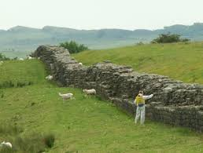
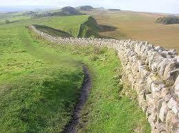
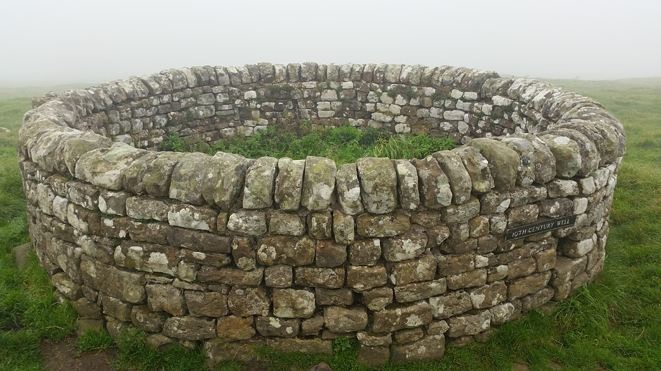

Come visit England and enjoy the Hadrian's Wall! Come receive
some British culture!

The wall is 80 miles long from sea to sea to make sure the
Barbarians and Romans were detached.

This location offers a once in a lifetime opportunity! The culture behind the wall and the other things
to do around the area make this a great attraction!
"wow! I am a world traveler and this is by far the most historic land
I have been too" -Albert Einstein
"I have a dog. This is her favorite place to go for a walk. It is very
peaceful."-Rachel Clark
"The history behind this land is incredible. My tour guide was named McKenna and she
explained the history!"-Lulu Newnam